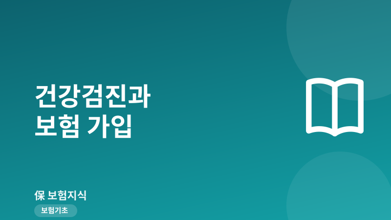
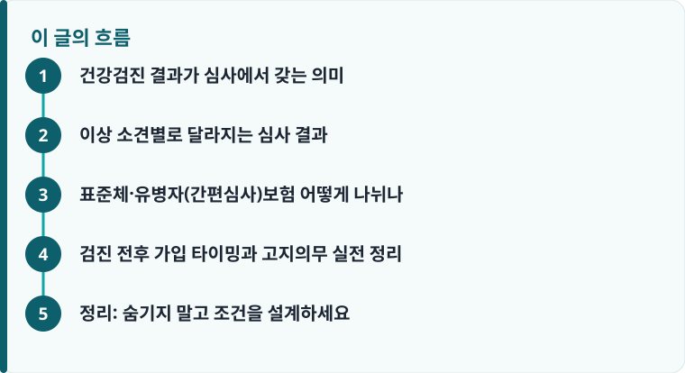

건강검진 이상 소견은 그 자체로 가입을 막지는 않지만, 보험사 심사에서 인수 거절·부담보·보험료 할증의 근거가 될 수 있습니다.
대부분의 청약서는 최근 3개월·1년·5년 단위로 검진 결과와 추가검사·투약 여부를 묻습니다. 검진 결과지가 곧 고지 자료가 됩니다.
이상 소견을 숨기고 표준체로 가입하면, 나중에 고지의무 위반으로 계약 해지나 보험금 부지급 위험이 커집니다.
건강검진 결과가 심사에서 갖는 의미
보험 가입은 신청만 하면 되는 것이 아니라 보험사의 ‘인수심사(언더라이팅)’를 통과해야 계약이 성립합니다. 이때 심사자가 위험을 판단하는 가장 구체적인 자료가 바로 건강검진 결과입니다. 국가건강검진 결과통보서나 회사 종합검진 소견서에는 혈압, 공복혈당, 간수치(AST·ALT·γ-GTP), 콜레스테롤, 위·대장내시경 소견 같은 수치가 그대로 남기 때문에, 보험사 입장에서는 신청자의 현재 건강 상태를 가늠하는 객관적 근거가 됩니다. 같은 나이·성별이라도 이 수치에 따라 보험료와 가입 가능 여부가 달라지는 이유가 여기에 있습니다. 나이·성별 외에 어떤 요소가 보험료를 움직이는지는 보험료가 달라지는 이유에서 함께 확인할 수 있습니다.
중요한 점은 검진 결과 자체가 곧바로 ‘가입 불가’를 뜻하지는 않는다는 것입니다. 심사는 대개 표준 인수(정상 조건 가입), 조건부 인수(부담보·할증), 인수 거절(가입 불가)의 세 갈래로 갈립니다. 이상 소견이 있어도 경미하거나 잘 관리되고 있으면 표준체로 통과되기도 하고, 특정 부위만 보장에서 빼는 조건으로 가입이 열리기도 합니다. 즉 검진 결과는 ‘문’을 닫는 장치가 아니라 ‘조건’을 정하는 자료에 가깝습니다.
이상 소견별로 달라지는 심사 결과
대표적인 이상 소견별로 심사 방향을 정리하면 이렇습니다. 고혈압은 수축기·이완기 혈압 수치와 투약 여부가 관건입니다. 약을 먹으며 130/80mmHg 안팎으로 관리되면 소폭 할증이나 표준체 가입도 가능하지만, 160/100mmHg를 넘거나 합병증 소견이 있으면 뇌·심장 관련 담보가 부담보되거나 거절될 수 있습니다. 당뇨도 비슷해서 당화혈색소(HbA1c)가 6.5% 부근에서 관리되는지, 합병증(신장·망막·신경)이 동반되는지에 따라 표준체부터 인수 거절까지 폭넓게 갈립니다.
간수치 상승은 원인에 따라 평가가 크게 다릅니다. 지방간에 따른 경미한 상승이고 추적검사에서 안정적이라면 표준체 가입 가능성이 있지만, B형·C형 간염 보균이나 간경변 소견이 있으면 간질환 관련 담보가 부담보되기 쉽습니다. 위·대장 용종은 ‘떼어냈는지, 조직검사 결과가 무엇인지’가 핵심입니다. 양성 용종을 절제하고 결과가 깨끗하면 대부분 표준체로 진행되지만, 조직검사 결과가 아직 안 나왔거나 재검·추적관찰이 필요한 상태라면 심사가 보류되거나 소화기 부담보 조건이 붙을 수 있습니다. 이렇게 붙는 조건이 실제 보장을 어떻게 좁히는지는 약관 읽는 법에서 부담보·특별조건 문구를 확인하며 이해하는 것이 좋습니다.
여기서 알아둘 용어가 부담보(특정부위·특정질병 부담보)와 할증입니다. 부담보는 예컨대 ‘위장 관련 질환은 5년간 보장에서 제외’처럼 특정 위험만 떼어내고 나머지는 정상 보장하는 방식이고, 할증은 표준 보험료에 위험도를 반영해 25%·50%처럼 얹어 받는 방식입니다. 둘 다 ‘가입은 시키되 위험은 반영한다’는 취지이며, 이상 소견이 있는 사람이 완전한 거절 대신 선택할 수 있는 현실적 통로입니다.
작성·검수 기준
이 글은 특정 보험사 상품이나 심사 통과를 보장하기 위한 것이 아니라, 건강검진 이상 소견이 인수심사에서 어떻게 다뤄지는지에 대한 일반적인 기준을 설명하기 위해 작성했습니다. 실제 인수 여부, 부담보 범위, 할증률은 보험사의 심사 기준, 상품 종류, 신청자의 세부 병력에 따라 달라지며, 같은 수치라도 회사별로 결과가 다를 수 있습니다.
정확한 가입 조건은 청약서의 계약 전 알릴 의무 사항과 상품설명서를 확인하고, 실손·의료비 보장의 기본 구조가 궁금하다면 실손보험 안내를 함께 살펴보는 것이 가장 정확합니다.

표준체·유병자(간편심사)보험 어떻게 나뉘나
건강한 사람이 가입하는 일반 상품을 ‘표준체 보험’이라 부릅니다. 계약 전 알릴 의무 항목이 많고 심사가 꼼꼼한 대신, 보험료가 상대적으로 저렴하고 보장 범위가 넓다는 장점이 있습니다. 검진 결과가 대체로 정상이거나 이상 소견이 경미하다면 우선 표준체 상품에 도전하는 것이 유리합니다.
반면 이미 지병이 있거나 최근 치료·투약 이력이 있어 표준체 통과가 어려운 경우를 위해 나온 것이 ‘유병자보험’, 흔히 간편심사(간편고지)보험입니다. 이 상품은 알릴 의무 질문을 3가지·5가지처럼 크게 줄여, 예컨대 ‘최근 3개월 내 입원·수술·추가검사 필요 소견, 최근 2년 내 입원·수술, 최근 5년 내 중대질병 진단·치료’ 정도만 묻습니다. 질문이 적으니 고혈압·당뇨가 있어도 가입 문턱이 낮아지지만, 대신 같은 보장이라도 보험료가 표준체보다 20~50% 이상 비싸고 감액·면책 조건이 붙는 경우가 많습니다. 그래서 무조건 간편심사로 가지 말고, ‘내 검진 결과로 표준체가 가능한지’를 먼저 타진해 보는 순서가 중요합니다.
검진 전후 가입 타이밍과 고지의무 실전 정리
가입 타이밍을 두고 흔히 하는 오해가 ‘검진 전에 얼른 가입하면 이상 소견을 고지 안 해도 된다’는 생각입니다. 하지만 청약서는 대개 최근 3개월 내 의사의 진찰·검사를 통해 추가검사(재검사) 필요 소견을 받았는지, 최근 1년·5년 내 특정 질환으로 진단·치료·투약을 받았는지를 묻습니다. 이미 검진에서 재검 소견을 받은 상태라면 아직 정밀검사를 안 받았더라도 고지 대상이 될 수 있습니다. 반대로, 몸이 걱정돼 검진을 미루고 가입부터 하는 것도 위험합니다. 알면서 숨기거나 사실과 다르게 알리면 보험금이 거절되는 사례처럼 나중에 계약이 해지되고 보험금도 못 받는 결과로 이어질 수 있기 때문입니다.
고지의무는 ‘질문표에 성실히 답할 의무’입니다. 묻지 않은 것까지 다 말할 필요는 없지만, 물어본 항목은 사실대로 답해야 합니다. 검진 결과지에 남은 수치와 소견은 보험사가 이후 자료 확인으로 언제든 확인할 수 있으므로, 숨기는 것은 실익이 없습니다. 순서를 정리하면 다음과 같습니다.
- 최근 건강검진 결과지를 펼쳐 혈압·혈당·간수치·내시경 소견과 ‘재검·추적관찰’ 문구를 먼저 확인합니다.
- 재검 소견이 있다면 가급적 정밀검사까지 마쳐 ‘이상 없음’ 또는 확정 진단을 받아 상태를 명확히 합니다.
- 경미하거나 관리 중인 소견이라면 표준체 상품에 먼저 청약해 심사 결과(표준·부담보·할증)를 받아 봅니다.
- 표준체가 거절되면 유병자(간편심사)보험을 대안으로 검토하되, 보험료·감액 조건을 함께 비교합니다.
- 어떤 경우든 청약서의 알릴 의무 항목은 검진 결과와 투약·치료 이력을 사실대로 기재해 고지의무 위반을 피합니다.
정리: 숨기지 말고 조건을 설계하세요
건강검진 이상 소견은 보험 가입의 끝이 아니라 조건 설계의 출발점입니다. 고혈압·당뇨·간수치·용종 같은 소견이 있어도, 관리 상태에 따라 표준체·부담보·할증·유병자보험 중 하나로 가입할 길이 대부분 열려 있습니다. 중요한 것은 결과를 숨기는 것이 아니라, 내 수치를 정확히 파악하고 그에 맞는 상품과 조건을 고르는 일입니다. 잘못된 타이밍과 불성실한 고지는 어렵게 든 보험을 무용지물로 만들 수 있습니다.
다른 보험 정보 글이 궁금하다면 보험지식 블로그에서 이어 읽어 보세요. 가입 전에는 반드시 약관과 상품설명서를 확인하는 것이 가장 안전한 방법입니다.